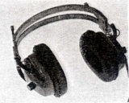
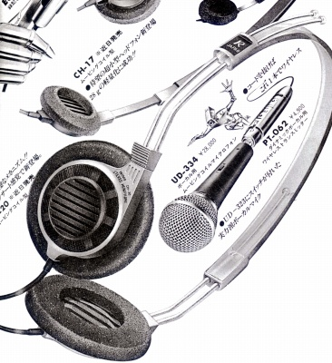
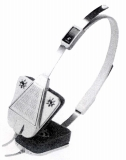
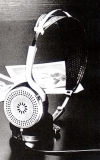
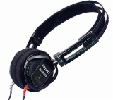
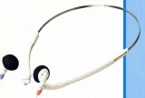

PRIMO（プリモ）
1952年設立のマイク等を主力にする、日本の音響機器メーカー。かつては民生用のヘッドフォンも扱っていたが、その後企業向けの提供のみとなり、現在では完全に撤退した模様。ただし、ヘッドフォン自体への取り組みは1960年代までさかのぼる。製品全体の提供の他、部品レベルの提供もしていたようだ。「CORAL（コーラル）」の80年代のヘッドフォンについてはOEM供給していた模様。また一部で有名なオーディオＦＳＫヘッドフォンのベース機を提供しているのは、この会社。
PRIMO（プリモ）の製品を以下のように分類する。（この分類は個人的な意見で、メーカーの分類ではありません）
�@DHシリーズ
1970年代初頭の自社ブランド商品。その後「CH」シリーズ開始までしばらく空白期間が続く。

�AＣＨシリーズ
1980年より始まったシリーズ。ソニーのMDR-3以降の小型・軽量機ブームに対応した機種か？広告によれば「シティ・フォン」シリーズと呼ぶらしい。他社がどんな廉価なモデルでも似たようなスペックを並べるのに対し、たとえばCH-12、15などは再生周波数帯域 50-13,000Hzなど極めて正直なスペック提示に好感を持てる。CH-20は音楽ジャンル別のモデル、「Ｃ」はクラシック、「Ｊ」はジャズ・ロック向きヘッドフォン。

CH-12 CH-15 CH-17 CH-20C CH-20J CH-26
 
�BＣＤシリーズ
民生用としては最後のシリーズか？ちなみにオーディオＦＳＫヘッドフォンのベース機はCD-6という機種だが、市販はされていない。
 